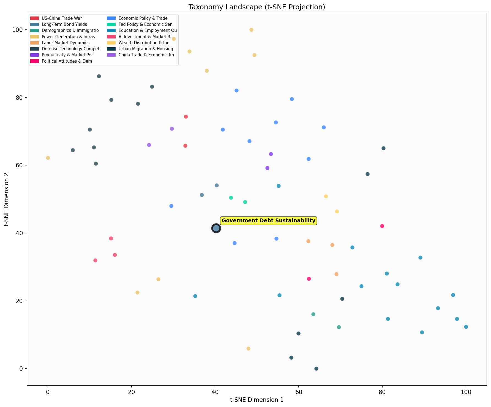

Description
This subcluster examines the fiscal foundations underlying long-term bond yields, focusing on government debt sustainability, deficit trajectories, and their market implications. Articles feature analysis from major institutions like the IMF, CBO, BIS, and Federal Reserve banks, alongside investment banks like Goldman Sachs. Content emphasizes quantitative fiscal metrics, debt-to-GDP ratios, deficit projections, and policy recommendations for fiscal consolidation. Unlike Treasury Market Dynamics which focuses on trading patterns and foreign demand flows, this subcluster addresses the fundamental fiscal health driving yield levels, including contingent liabilities, spending trajectories, and structural budget challenges across developed economies.
Similarity to All 70 Subclusters
Each cell represents a subcluster. Color intensity shows similarity (blue=low, red=high). Black line marks current subcluster position.
Relationship to Primary Clusters
Average similarity to each of the 15 primary clusters. Larger area = stronger relationship to that cluster.
Taxonomy Landscape
All 70 subclusters positioned by similarity (t-SNE). Current subcluster highlighted with label. Click to enlarge.
Network Connections
Current subcluster at center, connected to related subclusters. Line thickness = similarity strength.
Most Representative Articles
-
1. An IMF report notes high ongoing US government fiscal deficits and warns that loose US fiscal policy
-
2. .@delong proposes roughly matching federal program spending with taxes and running a deficit of ~ 3%
-
3. CBO's 2025 baseline, assuming the expiration of TCJA, projects debt growing from 98% of GDP today to
-
4. According to the new @USCBO projections, interest costs are forecast to double from $345B in FY ‘20
-
5. Torsten Sløk @apolloglobal argues that investors should watch for a rise in the term premium driven
Edge Cases (Boundary Articles)
-
1. Bridgewater argues the United States is in a bearish disequilibrium which is associated with a -2.4%This article is borderline because it focuses on equity market predictions and bearish economic conditions rather than the core fiscal themes of government debt sustainability and deficit trajectories that define this cluster. While macroeconomic disequilibrium could relate to fiscal concerns, the article's emphasis on equity returns and market forecasting aligns more closely with the alternative cluster about Fed policy and broader economic risks.
-
2. Torsten Sløk @apolloglobal notes that over the last decade, the foreign ownership of US government bThis article is borderline because while it mentions US government bonds, it focuses primarily on foreign ownership patterns rather than analyzing fiscal deficits, debt sustainability metrics, or government borrowing capacity that typically define this cluster. The content about declining foreign ownership of US bonds actually aligns more closely with currency and trade dynamics, as foreign bond holdings are often driven by trade relationships and dollar reserve management rather than fiscal health assessments.
-
3. American liberalism shifted towards market monetarism by 2007, emphasizing monetary policy over fiscThis article is borderline because while it mentions fiscal stimulus (relevant to fiscal policy debates), its primary focus is on the ideological shift in American liberalism toward monetary policy approaches rather than analyzing government debt sustainability, deficit trajectories, or bond market implications that define this cluster. The article's emphasis on monetary policy over fiscal measures makes it more aligned with broader policy philosophy discussions than the technical fiscal analysis central to this cluster.
Original Dendrogram